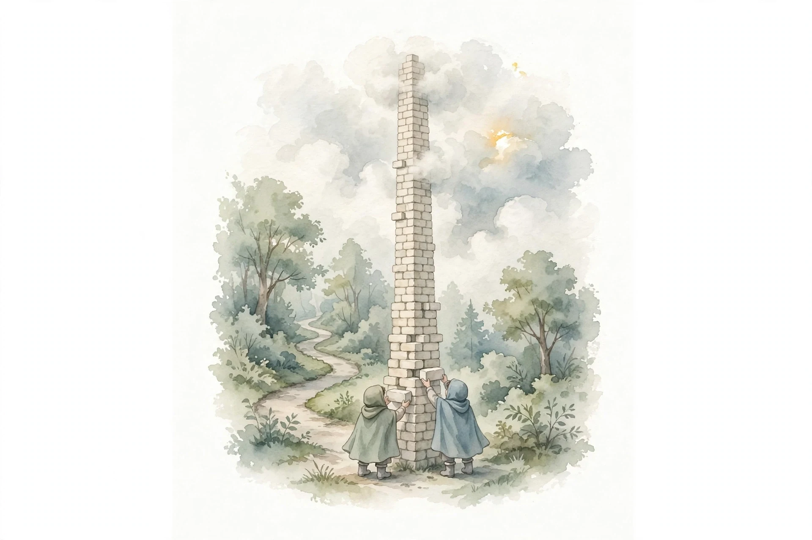

Clearer Thinking with Spencer Greenberg · Episode 7
How to Have Better Intellectual Conversations with Uri Bram
The 300th episode goes meta: Spencer Greenberg and Uri Bram dissect what makes conversations great, from the tower you build together to the group dynamics that tear it down.

Illustration. AI-generated watercolor made for this page: I put down a brick, you put down a brick, and we climb higher together.
Video. The full episode on YouTube.
~00:00
The Tower
build a kind of tower together
Uri Bram · Episode ~00:02
Source fact The 300th episode goes meta: what makes a great conversation, one-on-one first, then groups. The opening metaphor: conversation is building a tower together. I put down a brick, you put down a brick, and we climb to places neither of us would reach alone.
Source fact The first failure mode: you are not on compatible pages. You build two separate towers, flitting between them, and neither of you gets anywhere new.
Nugget 1 · Aim
Build one tower, not two
What happened. The episode's goal for intellectual conversation: generate new thoughts between you, reaching places neither mind visited.
Why it matters. If you wanted the expert's cached conclusions, you could watch their lecture. Conversation is for thinking together.
The principle. Check that you lay bricks on the same structure.
~00:08
Cached Thoughts vs Real-Time Thinking
Source fact People often repeat ideas they have already thought, instead of thinking in real time. The favorite episodes are the ones where the guest listens, thinks, and says something they may never have thought before the conversation started.
Source fact Experts are the hard case: hundreds of hours on a subject means many memorized paths, so they rarely go somewhere new. Real-time thinking is brave, because the thinker might fall, say something new, or realize everything they thought before was wrong.
Interpretation A debate is the opposite setup: cached positions, performance, no openness to a changed mind, and an audience that makes losing embarrassing. Respectful or not, it lacks the tower structure.
Nugget 2 · Presence
Think in real time or stay home
What happened. Cached thoughts are lectures wearing a conversation costume. The good stuff is unrehearsed.
Why it matters. New thoughts are the product. If nobody risks falling, nobody climbs.
The principle. Reward the unfinished thought. It is the only kind that moves.
~00:15
Thinking Together
I put down a brick and you put down a brick
Uri Bram · Episode ~00:03
Source fact The model on the table: conversation is collective thought. Teaching counts as a related form: explaining something for the first time compresses and clarifies it, so the teacher learns too.
Source fact The pinnacle both hosts describe: both people having new thoughts, both adding to the structure, creating something neither could have built alone. Fun and learning arrive together.
Nugget 3 · Model
Treat conversation as collective thought
What happened. Two minds, one structure, unknown destination. That is the ideal both hosts keep returning to.
Why it matters. It reframes the job: not winning, not performing, but co-authoring an idea.
The principle. Judge a conversation by what it built, not by who won it.
~00:23
Scout Mode and Vibe
Source fact Before a hard conversation can work, both people need scout mindset, Julia Galef's term for trying to see what is true rather than defending a position. If the other person is in soldier mode, the first job is to lower defenses: signal you are not an adversary.
Source fact Vibe is surprisingly load-bearing. Tempo must match: one host cannot talk with a brilliant friend for more than half an hour because her speed outruns his, and keeping up is physically exhausting, like running.
Source fact Goodwill and micro-expressions do quiet work. A nod means you can skip steps and jump ahead. A head shake means you went wrong and need an interjection. The feedback loop is underrated.
Nugget 4 · Setup
Get both minds into scout mode first
What happened. Object-level debate is downstream of mindset. Without mutual scout mode, the conversation cannot progress.
Why it matters. Vibe, tempo, and goodwill are not decoration. They are the infrastructure the ideas travel on.
The principle. Fix the container before pouring the content.
~00:30
Social Monitoring and Interruption Norms
Source fact Social monitoring is attention to the social layer: how everyone feels, how you are perceived. High monitors track it constantly. That awareness layer, noticing confusion, unhappiness, or engagement, feeds directly back into what you say next.
Source fact Conversations run on unspoken interruption norms. Interrupting is normally rude, but if someone has the wrong end of the stick, interrupting saves everyone time. The episode's analogy: Robert's Rules of Parliamentary Order allow a point of information or point of order when something has gone wrong.
Interpretation Voice beats text here because the meta-norms are live: you can interrupt the misunderstanding in the moment instead of discovering it three paragraphs later.
Nugget 5 · Norms
Interrupt the misunderstanding, not the speaker
What happened. Good conversations license a narrow kind of interruption: the rescue from a wrong track.
Why it matters. Letting a misfire run wastes the scarcest resource, shared attention.
The principle. Make the meta-norms explicit enough that rescue feels allowed.
~00:38
Voice, Video, and the Dark Room
Source fact Video is higher bandwidth: visual cues carry real information about confusion and engagement. But voice-only has a strange advantage. Tracking the social layer costs energy, maybe ten percent of attention, and the phone call frees you from it.
Source fact Removing the social layer also invites vulnerability. Car conversations, park benches, and one remembered conversation in a completely dark corridor all share the pattern: nobody stares into anyone's eyes, and people say what they really feel.
Interpretation Intellectual conversation needs emotional vulnerability underneath it. If people will not say their true views, especially on political or social topics, the conversation cannot progress.
Nugget 6 · Medium
Lower the social resolution to raise the honesty
What happened. Less social information means less performance and more candor. The dark room is an experiment in removing layers.
Why it matters. The best intellectual setting may be the one where nobody watches anybody.
The principle. When candor matters more than cues, go voice-only.
~00:45
Metaphors: Forest, Temple, Minecraft
Source fact The tower metaphor gets stress-tested. Alternative one: a walk in the forest with no fixed path, both moving together, choosing directions at every fork. Alternative two: a temple of belief, with core columns at the bottom and floors built upward.
Source fact The winner: Minecraft crafting. Combine ingredients into new materials, then use the new materials as ingredients for the next thing. Each tower becomes a building block for future towers. Ideas are infinitely replicable tools, not rooted structures.
Source fact The same-page test: you can tell someone understood you when their next response would be implausible otherwise. A perfect example that fits your problem cannot be coincidence. A generic tell-me-more could come from a chatbot.
Nugget 7 · Ideas
Craft materials, not monuments
What happened. Good ideas survive the conversation as reusable ingredients for the next one. That is the real product of a great talk.
Why it matters. Shared vocabulary is compound interest: philosophers who know the references can move at inhuman speed.
The principle. Leave every conversation with at least one new material.
~00:53
Definitions and the Dark Forest
Source fact In the episode's disagreement workshops, pairs map the root of their dispute. About one in three discover they never disagreed at all: they used the same word for different things. The fix is not to debate the definition. One side adopts the other's, or you coin a new word, or you taboo the word entirely.
One in three disagreements is definitional
From the episode's disagreement workshops.
Source: Clearer Thinking, Uri Bram episode, ~00:53. The one-in-three figure is the host's estimate from the workshops.
Source fact The mind model: a garden of conscious thought beside a walled dark forest of the subconscious. You throw queries over the wall and wait for what comes back. Some queries work well, like generating more things like these, and some fail, like words with a given third letter. The other host pictures the forest as the Greek muses, nine of them, channeling ideas.
Interpretation Communication is lossy because each side rebuilds the other's meaning from its own associations. The duck you picture is not the duck I picture. Shared culture narrows the gap enough for the bricks to land in roughly the same place.
Nugget 8 · Definitions
Taboo the word before you fight over it
What happened. A third of workshop disagreements dissolved once the word was replaced with what each side actually meant.
Why it matters. Secret debates about definitions feel like real disagreements and resolve like mirages.
The principle. When stuck, drop the contested word and describe the thing.
~01:00
Politics: Light Gassing and Reframing
light gassing
Uri Bram, who coined the term · Episode ~01:03
Source fact Light gassing is the episode's coinage: the opposite of gaslighting. Where gaslighting makes people doubt correct perceptions, light gassing reinforces false ones. Yes, the other side is all evil. Yes, your ex was the worst. Tribal agreement sessions are camaraderie, not intellectual conversation.
Source fact The reframe move: escape the default framing. Immigration as good-or-bad is a dead end. Better questions: if you had to admit exactly one person, how would you choose? How many people per year, and how would you set the number? Marginal thinking dissolves the binary.
Interpretation Binary debates hide secret debates: about definitions when the question is categorical, about values when the question is good-or-bad. Name the hidden debate and the visible one often dissolves.
Nugget 9 · Politics
Refuse the default frame
What happened. The interesting question is rarely the one the discourse hands you. It is one reframe away.
Why it matters. Light gassing feels like agreement and functions as anesthesia. Reframing wakes the conversation up.
The principle. When the frame is binary, ask the marginal question.
~01:10
Group Conversations
Source fact Book clubs exemplify the failure: the topic is too big to hold, and the conversation stop-starts as each person reacts to a different earlier remark. Nobody builds on anyone else. Random loosely-connected thoughts yank the walk into the woods.
Source fact The threshold model: everyone has an implicit relevance threshold for jumping in, and an implicit pause threshold for interrupting. In a group, the lowest thresholds win. One low-relevance, fast-buzzing member dominates while the five-second-pauser never speaks. Past about four people the game-show buzzer takes over. Near seven it breaks down completely.
Source fact The episode's study: most people prefer to speak 40 to 60 percent of the time. That preference is mathematically impossible for everyone past pairs, which explains the chronic frustration. Equal shares at four people give each 25 percent, well below the preferred band.
Everyone wants half the airtime
Preferred speaking share versus equal share by group size.
Source: Clearer Thinking, Uri Bram episode, ~01:10. The 40-60% preference is from the episode's study. The curve is 100/n.
Try it: the airtime squeeze
Move the slider. Watch the equal share fall out of the preferred band.
Nugget 10 · Groups
Cap the group or appoint a referee
What happened. Four people can still share airtime. Near seven, the lowest threshold wins and the conversation becomes a buzzer game.
Why it matters. The recipe that works: curate carefully, six people max, four better, one moderator with an explicit mandate to steer.
The principle. Design the container. The default container fails.
~01:18
Leaving, Hosting, and Finding Your People
Source fact The exit technique: stay quiet for a minute so you are not the focus, drift your body slightly outside the circle, then a small hand gesture and an excuse-me, and walk away. The group closes in and keeps talking. It works because nobody noticed.
Source fact The host framing: a college public-speaking professor taught the episode's guest to act like the host of a dinner party everywhere, even in job interviews. Your job is to make the other people comfortable. Charm the irritable interviewer instead of fearing them.
Source fact The closing advice: find one person you jam with and talk to them at extreme length. Pre-send topics before you meet so the conversation skips the warm-up. Reflect or write down what you learned afterward, or the great ones evaporate.
Interpretation The Intel founder's rule, quoted in the episode: one-on-one meetings need an hour, because the first half hour never gets anywhere. Pre-sending topics is a way to preempt that tax.
Nugget index
- Build one tower, not two
- Think in real time or stay home
- Treat conversation as collective thought
- Get both minds into scout mode first
- Interrupt the misunderstanding, not the speaker
- Lower the social resolution to raise the honesty
- Craft materials, not monuments
- Taboo the word before you fight over it
- Refuse the default frame
- Cap the group or appoint a referee